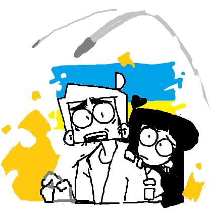

Help Cyan & family escape war
What is the fundraiser for?
We're raising funds to help cyan_square's family migrate from the Ukrainian warzone
We are gathering talented artists together to livestream their craft during this fundraising event.
All are welcome to hang out, chat & donate to a good cause.
The livestream will host on Piczel starting at for approximately 8 hours.
How can I help?
Donate to cyan_square & family via Ko-fi.
If you donate US$ or more, you may also request a commissioned sketch from our active artists in the livestream.
How does this work?

How can I donate to request a commission?
Please remember this is a donation - not a purchase.
- Donate US$ or more via Ko-Fi or the donation widget on this page to request a commissioned sketch
- In the donation message write a brief description of the sketch you want to see
- What is or isn't allowed?
- Your donation request will be immediately catalogued in our Trello
- Requests will be chosen by a random artist
- Watch them drawn live in our livestream
To encourage higher donation, you may request a more complex drawing by donating over the thresholds outlined below:
| US$+ | Single character black & white sketch, shading, bust only | US$+ | Two characters |
| US$+ | Single character color sketch, shading, thigh bust or chibi only | US$+ | Two characters |
| US$+ | Single character color sketch, shading, full body | US$+ | Two characters |
At 5 hours from the planned beginning of the stream we will stop accepting new commission requests.
How will I know if my commission was chosen?
- All requests will be public on Trello board.
- Drawings in progress will be shown under an artist's column.
- All finished drawings will be shown under the completed column.
- The Trello board will remain publicly accessible after the event.
Please note that our artists will try to work through as many requests as possible in the time limit, but there is no guarantee that we can fulfil every request.
Will I be contacted if my commission is chosen/finished?
You will have to manually check the Trello board to see if your request has been fulfilled.
I donated last stream and got an uncompleted/completed commission, can I submit more requests?
Multiple requests are okay, but each will require an additional donation.
Any incompleted requests from a previous event will not carry over to future events.
What is or isn't allowed in commission requests?
One donation = one sketch request.
You may donate multiple times for multiple sketch requests.
Try to describe your drawing request in 15 words or less.
You may add image references with links to off-site images.
You may remain anonymous.
Over-complex requests may be simplfied due to time constraints and the nature of sketch quality.
Commissions will be chosen via unbiased selection by any artists participating in the livestream.
Sketches can be SFW or tasteful NSFW pin-ups.
Maximum 2 characters per request.
Any requests with the following themes will be rejected; lolicon/shotacon, pedophilia, bestiality, necrophilia, incest, rape, scat, watersports, guro/gore
Each artist has ultimate right to refuse selection of a commission, such as requests with offensive content.
I have a question that isn't answered here!
Feel free to ask one of our helpful event staff in Piczel stream chat while the event is active.